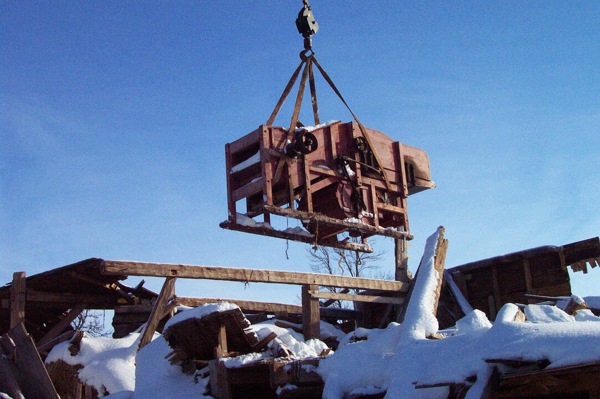

Community Foundation News
No. 67 May 12, 2007
Agricultural Heritage Project

Island-made Farm Equipment
The above photo, and a description of the initiative, appeared in the second issue of Community Foundation News dated June 18, 2004. Since then:
- Tony Glencross conducted initial survey
- McNaught History Centre prepared Made in PEI, a preliminary review of Island-made farm equipment. The report is available from the Foundation office.
- Mrs. E. Carver, Cambridge, PEI. offered a Hall thresher in her possession. While the thresher itself was in poor condition, a side panel had been used by the original owner to record the date and number of bushels threshed during its working life. The relevant panel is now in the possession of the PEI Museum and Heritage Foundation.
- The Hall thresher shown in the photo is now in the possession of the PEI Museum and Heritage Foundation
- Discussions were held with a number of representatives of PEI Museums to highlight the existence of PEI made equipment and the need to inventory and preserve it for future generations.
- In order to ascertain the level of interest, informal meetings were held with a number of private collectors in each County.
- An Agricultural Heritage Fund, an endowment, was established thanks to the efforts of Mr. Paul. H. Schurman. Readers may contribute through the Foundation office.
- PEI Association of Community Museums secured funds to begin the process of inventorying early farm equipment with special attention to pieces “Made in PEI”.
- An Island-wide informal invitational meeting was held in Charlottetown and included presentations by the Association of Community Museums and The PEI Museum and Heritage Foundation; the meeting also provided an opportunity for participants to exchange information and network.
- An informal network of private collectors and representatives of various museums now exists.
Conclusions
- All museums are in need of more dry and secure storage space especially for farm equipment.
- There are a significant number of pieces of Island-made farm equipment that should be saved
- The inventory of island-made farm machinery needs to continue
- There are more private collectors of farm equipment than we had anticipated
- Private collectors could benefit from technical assistance especially in the area of conservation
- Private collectors are interested in continuing to network and to visit other private collectors.
- An occasional newsletter directed to private collectors would be welcomed.
- The Agricultural Heritage Fund at CFPEI should be promoted as a mechanism to provide future funding for special projects.
Community Foundation of Prince Edward Island
119-121 Queen Street, Suite 105
Charlottetown, PEI C1A 4B3
Tel: (902) 892-5859
Email: foundation@cfpei.ca
Website: www.cfpei.ca